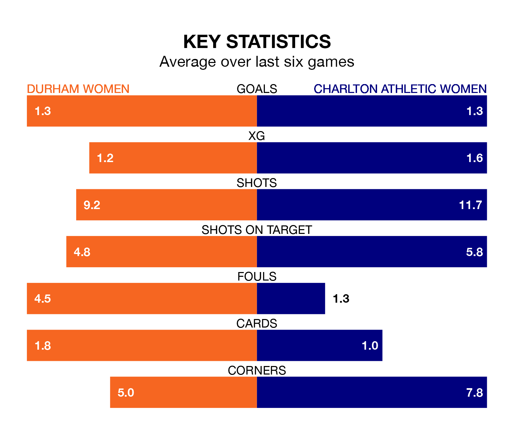

Charlton Athletic Women travel to Maiden Castle Sports Park for Sunday lunchtime's match against Durham Women looking to bounce back from defeat last time out in the FA Women's Championship.
Charlton Athletic, who sit fourth in the league after 16 games, fell to a 1-0 home defeat to Reading Women on March 10.
They face a Durham side who secured a draw in their last match, a 2-2 tie with Blackburn Rovers Women, and who sit eighth in the table.
In the last 10 years, Durham and Charlton Athletic have played each other on 11 occasions. Durham won three of them, Charlton Athletic four, and they drew four times.
On average, Durham scored 1.5 goals and Charlton Athletic 1.4 in those matches.
Their last meeting was on October 8, when they played out a 1-1 draw.
With 19 goals in 17 games so far this season, Durham are scoring at below the league average rate with 1.1 goals per game. And they are conceding more than average, letting in 32 goals at a rate of 1.9 per game.
Charlton Athletic, meanwhile, are average scorers, with 1.4 goals per game. They have conceded 0.9 goals per game.
In Sian Rogers, the away team can rely on one of the league's safest pair of hands. She has kept five clean sheets in her 13 appearances this season, and only two other 'keepers – Sunderland Women's Claudia Moan and Reading Women's Emily Orman – have been able to prevent the opposition scoring on more occasions in the FA Women's Championship.
In the hosts' net, Naoisha McAloon has two clean sheets in eight games. She has conceded a goal every 38 minutes, four times as often as the 140 minutes between goals for Rogers.
Durham are in disappointing form in the FA Women's Championship, with one win and three draws from their last six games.
With two wins and three draws over that period, Charlton Athletic's form is better – they have taken nine points from 18, compared to Durham's six.
Updated: 15:10 (UTC), 15/03/24